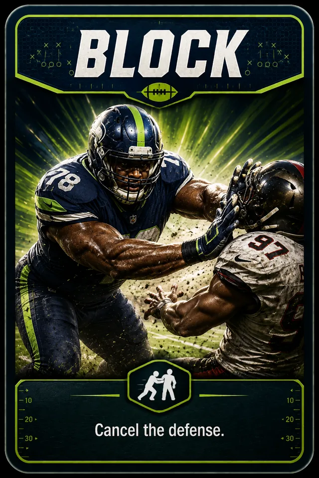

MAGIC 01Control
TIME STOP
Freeze the action
During this play, no animal except the caster may play Action Cards. This includes the caster's teammates. Magic Cards are unaffected.
Follow all NINE steps: sort five types of cards, set up the mat, choose teams, deal and roll dice, attack and defend, use Magic and animal abilities, then finish four quarters. The higher-scoring team wins.
Sort everything before you start dealing. Do not mix these categories together.
Open the card set and organize it into the following five card types. Each type has a different job. They are not all dealt in the same way.
Both teams begin in the middle. The colored markers stay on the mat.
Lay the football field mat flat where everyone can see it. The mat is your playing field: use it to track where Red Team and Blue Team are during the match. Make sure both teams can read the yard lines and see the end zones.
Take out the red miniature football for Red Team and the blue miniature football for Blue Team. Place both at 50 | 50. These markers show both teams at the same current line of play. NEVER move either marker before an attack and all defensive responses finish. After a successful Red attack from 50 to the opponent's 40, move the RED marker forward to 40 and move the BLUE marker backward to the SAME 40-yard line. Move both miniature footballs together only after the final attack/defense outcome; if the attack fails, neither moves. If a PASS is successfully INTERCEPTED, immediately move BOTH mini footballs to 50 | 50 and give the Football Card to the intercepting team to attack on 1st Down. Mini balls show field position; only the single Football Card shows possession.
Place all 18 Scoring Cards face up where both teams can reach them, sorted by their six values: 30 × 2, 20 × 2, 10 × 3, 6 × 4, 3 × 3 and 1 × 4. Every card shows only its printed number—no words, icons or labels. WHEN YOU SCORE, TAKE THE CARD FOR EXACTLY WHAT YOU EARNED: TOUCHDOWN +6 → take one 6; made FIELD GOAL +3 → take one 3; made EXTRA-POINT KICK +1 → take one 1; a miss earns nothing. 10/20/30 are never earned directly. SCORING CARD EXCHANGE — ANYTIME, ANY COMBINATION: At any time during the game, you may exchange any combination of your team's Scoring Cards for another combination from the shared supply, AS LONG AS THE TOTAL POINTS REMAIN THE SAME. You may also break a large card into smaller values or exchange several cards for a higher value. For example, 6 + 6 + 3 = 15 ↔ 10 + 3 + 1 + 1 = 15; 6 + 6 + 6 + 3 = 21 ↔ 20 + 1 = 21; and 10 + 3 + 1 = 14 ↔ 6 + 6 + 1 + 1 = 14. There is no 5-point card, so 15 cannot be held as just a 10 and a 5. Exchanges use only the actual cards available in the shared supply: if an exact-value combination is unavailable, keep your existing cards until another valid exchange is possible. Never gain or lose a point by exchanging cards. Exchange also allows exact change for TIME REWIND. Keep both teams' earned cards separate and add their values after Quarter 4. Leave the Football Card in the center until kickoff possession is decided.
Agree on teams first, deal your cards, then roll to find out who goes on offense.
Choose Red and Blue teams. The minimum is 2v2 ANIMAL CHARACTERS. Normally 4 humans play 2v2, while 6 humans play 3v3 and 8 humans play 4v4. SPECIAL TWO-HUMAN GAME: each human controls TWO animal characters, making a full 2v2 animal matchup. With a larger odd-sized group, both sides may agree to an uneven team split such as 2v3, 3v4 or 4v5. Three-human lineups are not supported.
Shuffle the 20 unique Magic Cards face down. Deal 2 to every human player, regardless of team size. Put the leftover Magic Cards face down, off to the side, without revealing them. Players keep unused Magic Cards into later quarters. There are no new Magic draws between quarters. You may use both cards in the same quarter if their conditions allow it, but each individual Magic Card can be used only once.
Shuffle the 10 different Animal Role Cards face down. Normally deal one Role Card to each human player. If only two humans are playing, deal two different animal characters to each player for a 2v2 animal matchup. Each player privately checks their animal identity, then keeps their Role Card face down and hidden. Put unused Role Cards aside face down.
WHEN TO REVEAL: When a passive ability takes effect, turn its Role Card face up so everybody can see the animal. When an active ability is used, reveal its Role Card as soon as the skill is activated, even if the effect is later stopped or fails. Once revealed, keep the Role Card face up for the entire game, including every following quarter. Players keep the same animal identities for all four quarters. With only two humans, reveal each of a person's two Role Cards separately whenever that animal's own ability activates.
Shuffle the Action Card deck and deal EXACTLY 7 ACTION CARDS to each human player. This is always seven per human: two-human 2v2 with two roles each, standard four-human 2v2, 3v3, 4v4 and agreed larger uneven teams. Place the undealt Action Cards face down at the side; they can be drawn only when a card effect specifically says to draw. Do not draw a replacement after every card played.
Red and Blue each choose one representative to roll a die. BEFORE either side rolls, the teams agree on which rule will decide the winner: higher number wins or lower number wins. Then both representatives roll. If the numbers are equal, roll again until there is a winner.
The winning team takes the single Football Card, chooses which animal starts with possession, and begins Quarter 1. Remember which team starts Q1: the OTHER team starts Q2, the original team starts Q3, and the OTHER team starts Q4. This alternation applies to the opening possession of each quarter only; normal scores and turnovers still change possession within a quarter. With two human players, say which animal you are operating before taking its action.
Hold the Football Card, choose a Play, and gain a new first down whenever you advance 10 yards.
The team holding the Football Card chooses which of its animals carries it. Only that animal starts a normal RUN/PASS. With two human players, each controls two animal characters; say which animal you are playing before its action (for example, “I’m playing Tiger!”) and keep the Football Card beside the chosen Role Card. You can use Magic at any legal trigger or timing, whether attacking or defending; identify the caster animal when the effect depends on it. Each side begins a new possession on 1st Down. A successful INTERCEPTION returns both mini-footballs to 50 | 50 for the intercepting team.
RUN: The carrier plays RUN. If it succeeds, move forward 10 yards, and the same character keeps the Football Card.
PASS: The carrier plays PASS and names a receiving teammate before any response. If it succeeds, move forward 10 yards and pass the Football Card to that character. When only two humans play, PASS between your own two animal characters. A Magic or Animal Role effect may change the yardage or resolution.
After you play RUN or PASS, any eligible member of the defending team may respond. Against RUN, defenders can use TACKLE to stop the gain or STRIP to risk a forced fumble. Against PASS, defenders use INTERCEPTION. STRIP cannot defend PASS. ANY attacking teammate may play BLOCK, not just the carrier. Different teammates may play successive legal responses in the same Play. Either side may use legally timed Magic Cards or Animal Role abilities. Do not move either mini-football until the entire response chain has finished. Then update BOTH team markers together based on the outcome; if a PASS is intercepted, return both to midfield.
Each new 10-yard section has its own set of four downs. On a successful ordinary 10-yard RUN or PASS, move BOTH team markers to the same resolved yard line (attack moves forward, defense retreats) and immediately reset the count to 1st Down. You do not have only four failed attacks for the entire drive. If the defense stops a Play or the ball carrier gives up a down to hand the Football Card to a teammate, stay at the current yard line and go to the next down (1st → 2nd → 3rd → 4th). Giving up a down does not reset the down count or advance the ball. On a failed or surrendered fourth down, give the Football Card to the other team at that same position; their new drive begins at 1st Down. A successful INTERCEPTION specifically resets BOTH team markers to the 50-yard line.
A normal successful RUN or PASS advances 10 yards. From midfield, a touchdown therefore requires five separate successful gains: 50 → 40 → 30 → 20 → 10 → TOUCHDOWN. The fourth success only reaches the opponent's 10-yard line; you need a successful fifth attack into the end zone. Four downs is the maximum attempts per 10-yard section, not the number of successful gains required for a touchdown.
Before starting the next RUN/PASS, if your team has possession at the opponent's 40-, 30-, 20- or 10-yard line, you may announce a FIELD GOAL instead of playing an Action Card. Field goals are NOT allowed from midfield (50). Field goals are NOT allowed from midfield (50). No separate KICK or FIELD GOAL Action Card exists or is required. After eligible Magic/Role responses, roll two six-sided dice and add the numbers. A successful kick earns a Scoring Card showing only 3; a miss earns no card and turns over possession. See the full kick thresholds in Step 9.
After a TOUCHDOWN, take a 6 Scoring Card. The scoring team may then attempt the separate 1-point extra-point kick. Once that extra-point attempt is completed or declined, return BOTH miniature football markers to midfield (50 | 50). Give the Football Card to the team that conceded the touchdown; it chooses its carrier and begins 1st Down at the 50-yard line. After a successful FIELD GOAL, take a 3 Scoring Card and restart the conceding team at midfield in the same way. A missed field goal uses the turnover spot in Step 9 instead. IMPORTANT: MIDFIELD (50) IS ONLY A RESTART POSITION — YOU CANNOT ATTEMPT A FIELD GOAL FROM THE 50-YARD LINE. A regular FIELD GOAL is allowed only at the opponent's 40-, 30-, 20- or 10-yard line. The extra-point kick is a separate attempt allowed immediately after a touchdown.
Resolve all responses and countereffects, move the marker, change downs or possession, and award any earned Scoring Cards. Put used Action Cards in the discard pile. Do not draw an Action Card automatically after a Play; the optional one-card draw for an unanswered normal attack belongs to the defending team as described in Step 5. HANDING THE BALL TO A TEAMMATE IS NOT FREE: If the current ball carrier has no RUN or PASS but another teammate has a playable RUN/PASS, the carrier may GIVE UP ONE DOWN to hand the Football Card to that teammate before the next Play. No Action Card is played, no yards are gained, and both mini-footballs stay in place. The down count ADVANCES (1st → 2nd, 2nd → 3rd, or 3rd → 4th); it does NOT reset to 1st Down. The teammate may start the following Play on that next down. Giving up 4th Down causes a turnover at the current yard line instead of a teammate handoff. When in legal field-goal range (opponent's 40/30/20/10), the carrier may instead choose a FIELD GOAL before giving up a down. If NO ONE on the entire team has playable RUN/PASS, there is no teammate who can attack next: follow Step 9's required NO ATTACK CARDS LEFT procedure.
Each successful 10-yard advance resets the offense to 1st Down. A stopped attack stays at the current yard line and uses a down. Completing an entire successful 50-to-TD drive is not limited to four total attempts.
Respond when the opposing ball carrier plays RUN or PASS, or choose to allow the gain and draw one Action Card.
While the opposing team holds the Football Card, your team is on defense. The opponent starts a normal Play by using RUN or PASS. Only after the attack has been played may defenders answer with ordinary Action Cards. Magic Cards and Animal Roles may respond only at their legally specified times.
Against RUN, use TACKLE to stop the runner. Against PASS, use INTERCEPTION to take the Football Card if it stands. STRIP is a risky alternative to TACKLE, only against RUN. After legal Magic/Role responses, roll ONE six-sided die: 5–6 forces a fumble, and the STRIP defender takes the Football Card at the current yard line, beginning 1st Down; both mini-footballs stay at that yard line. On 1–4, STRIP fails and the RUN succeeds for its normal gain unless a legal special effect changes it. Only ONE STRIP attempt per RUN for the whole defense. After STRIP is played, the defense may not play TACKLE or any other ordinary defensive Action Card on that RUN, even if the roll fails. BLOCK does not cancel STRIP; valid Magic/Role reactions still apply. An uncanceled INTERCEPTION instead steals possession on PASS and resets both mini-footballs to 50 | 50.
Any attacking teammate can play BLOCK against a normal TACKLE or INTERCEPTION, and multiple attacking teammates may respond in the same Play. If BEAR personally plays TACKLE, the SAME single attacking player must use TWO BLOCK cards together to cancel that TACKLE; two teammates each supplying one BLOCK is not enough. BEAR's INTERCEPTION is different: BEAR must play TWO INTERCEPTION cards together to attempt an interception, without any extra BLOCK resistance. EAGLE's SKY PICK: once per quarter, when EAGLE itself plays an INTERCEPTION, it may announce “Sky Pick!” to require the SAME attacking player to play TWO BLOCK cards together to cancel it; two different teammates cannot each contribute one. Ordinary defensive counters, Magic and Role effects still apply.
After seeing an ordinary RUN or PASS, the defending team may decide not to defend, or it may have no usable defense. If the entire defending team makes no defensive response and that normal attack successfully advances 10 yards, the attacking team gets the 10 yards and resets to 1st Down. In exchange, the defending team may choose ONE of its players to draw exactly ONE Action Card from the face-down Action Deck. This is one optional draw per unanswered Play for the entire team, not one draw per defending player. If the Action Deck is empty, no card is drawn.
No draw if a defender actually responds, if the attack fails, or if an effect makes ordinary defense impossible (for example INVINCIBILITY, TIME STOP, or a ball protected by INVISIBILITY). The draw comes after the offensive Play resolves and does not interrupt the response stack.
After each card or ability is announced, give the other side a chance to answer with a legal response. Resolve the newest legal response first (last in, first out) after both teams stop responding. If effects conflict, a Magic Card's valid effect takes precedence over an Animal Role ability, and a Role ability over an ordinary Action Card. Specific counter-cards and the stated timing on each card still apply. See the complete response-chain example in Step 8.
Determine whether an uncanceled INTERCEPTION steals possession, a different defense stops the advance, or RUN/PASS succeeds. Only after all responses have finished, update BOTH colored markers together. An INTERCEPTION returns BOTH to 50 | 50; give its team possession on 1st Down. Update downs and card piles after the outcome. Discard the used Action Cards. Spent Magic Cards leave the game. An active limited Role ability is spent when declared; an Animal Role becomes visible when its passive activates or active skill is used.
Before the match, each HUMAN PLAYER receives two unique Magic Cards for the entire game. Read each effect and its trigger below. Every Magic Card can be used only once, with no limit on how many you use in a single quarter.
You decide when to play a Magic Card, whenever its trigger and timing are legal; you do not have to wait for your own attack. Some spells initiate an effect, some respond to cards, and others affect kicks or last until a quarter ends. With two humans controlling two animals each, declare which animal is casting when that identity matters (FLIGHT requires the current carrier); the human still holds only two Magic Cards for the entire game.
Magic Cards are not drawn again after use and are not redealt between quarters. You may spend both of your starting Magic Cards during Quarter 1 or save them for later. A Magic Card is never forced to roll because of ROLL OF FATE. A triggered GUARDIAN also counts as using that one physical card, but there is no per-quarter Magic limit.
Declare the Magic Card and its target, then let opponents use any eligible counter Magic Card. Resolve the specific counter first (for example, GRAVITY can stop FLIGHT, SHATTER can break MAGIC BARRIER). Then settle the affected Play and put each used Magic Card out of the game.
Unless the description says otherwise, a spell resolves immediately or during its current Play. Quarter-long effects such as INVISIBILITY and ROLL OF FATE expire at the end of that quarter. Playing a Magic Card does not use up an Animal Role ability.
Showing all 30 cards.
During this play, no animal except the caster may play Action Cards. This includes the caster's teammates. Magic Cards are unaffected.
When an opponent attempts a field goal or extra point, move the goalposts so the kick misses.
Only the character holding the Football Card may cast FLIGHT. Fly directly to the goalposts to attempt a field goal, not a touchdown. Ordinary Action Cards cannot block the flight. After legal kicking Magic effects are settled, roll two six-sided dice using the field-goal target from the original yard line. GRAVITY cancels FLIGHT. If the kick scores, take the number-only 3 Scoring Card, reset both team markers to midfield, and give the conceding team possession.
Cancel FLIGHT. Otherwise, during the current Play, a RUN or PASS must be backed up by TWO matching Action Cards played by the SAME PERSON: two RUN cards for RUN or two PASS cards for PASS. The original offensive Action Card counts as the first card; that same person must supply the second. Two teammates cannot each contribute one card. If the original player cannot supply it, the attack fails, gains 0 yards, and uses one down. Both cards used for a successful pair are discarded after the Play. Other legally timed counters still apply.
The current offensive play fails, unless SHATTER is used to destroy the barrier.
Destroy MAGIC BARRIER or INVINCIBILITY. If neither is active, cancel the effect of one opposing Action Card.
Cast during the current Play or immediately after an opponent's touchdown, extra-point kick, or made field goal, before the next Play begins. Return BOTH team markers, the Football Card, and the down to the positions at the start of the canceled Play. UNDO THE POINTS from that Play: the scoring team must RETURN exactly the points canceled to the shared Scoring Card pile: 6 for a touchdown, 1 for a made extra point, or 3 for a made field goal. If the team has already exchanged those points into 10, 20 or 30 cards, make equal-value change back into smaller cards first, then return the canceled amount. The value of the remaining cards must equal the team's corrected score. If the replayed attack scores again, earn the matching scoring card normally again. Used Action/Magic cards are NOT restored; hands are not reset. This spell cannot duplicate points.
Your next offensive play cannot be defended by opponents. SHATTER can cancel this Magic Card.
While holding the Football Card, declare PHANTOM PASS, play PASS, and name an animal teammate as receiver. Temporarily lift one miniature football from the mat, secretly close it in your LEFT or RIGHT hand, and show both closed fists to one representative chosen by the defending team. That opponent guesses left or right. Wrong guess: PASS succeeds for 20 yards and the receiver takes the Football Card. Correct guess: PASS fails for 0 yards and consumes one down. Put the mini-football back on the mat at its recorded position, then move BOTH field markers only after final resolution. TRUE SIGHT counters the trick.
Counter PHANTOM PASS, or look at two cards from an opponent's hand. Any player who uses TRUE SIGHT this quarter can also see and defend the ball carrier protected by INVISIBILITY.
Subtract 5 from an opponent's field-goal or extra-point dice total. SUPER STRENGTH cancels this wind.
Cancel GALE FORCE, or empower your RUN so opponents need two TACKLE cards to stop it.
Choose one allied animal character on YOUR OWN team other than the caster. That character is benched for the rest of this quarter, cannot use its Role ability or its unused Magic Cards, and returns next quarter. Move the benched character's Action Cards to active allied characters. Special two-human 2v2 game: one human controls two allies using a shared Action hand; benching one animal does not create or require a separate hand, and the other active animal may use the human's shared Action Cards. GUARDIAN counters CHAOS.
Steal one Action Card from each opposing player. Magic Cards and Role Cards cannot be stolen. GUARDIAN can prevent the theft.
One-use passive Magic Card. When CHAOS or PICKPOCKET would take effect, GUARDIAN cancels it and is permanently consumed. There is no per-quarter Magic limit.
Call out “COPYCAT!” and select one other player who holds unused Magic Cards. That player keeps their Magic Cards face down. Choose ONE of their unused Magic Cards at random, WITHOUT viewing any of them first. After the blind choice, reveal the identity of the selected Magic Card to resolve the copy; you cannot inspect the rest of their Magic hand. If the selected Magic Card has an ACTIVE effect, attempt to activate it immediately, provided its normal trigger is currently legal; otherwise the copy has no effect, but COPYCAT is still spent. If the selected spell is PASSIVE, announce the copied spell's name aloud so everyone knows which effect will apply at its normal trigger. The chosen original Magic Card stays with its owner and is not consumed. COPYCAT itself is used only once.
Exchange one unused Magic Card you hold with one unused Magic Card held by another player, whether teammate or opponent.
Cast only while carrying the football. The animal is invisible for this entire quarter. As long as that animal keeps carrying the still-invisible ball, consecutive RUN plays cannot be defended with ordinary Action Cards unless a defender used TRUE SIGHT this quarter. Once the ball is PASSED, it becomes visible permanently, even if the original carrier gets it back. The animal stays invisible until quarter's end.
For the rest of this quarter, every player except the caster rolls a six-sided die whenever playing an Action Card or activating an Animal Role Skill. A roll of 1–3 fails (the Action Card is discarded or the limited Role use is spent); 4–6 succeeds. Magic Cards are entirely exempt.
Every player shuffles their Action Cards back into the shared Action Deck, then draws exactly as many Action Cards as they held before. Magic Cards and Role Cards are unchanged.
Each animal has a Role ability and is not tied to a team color. EAGLE's SKY PICK is a once-per-quarter interception skill; RABBIT and BEAR are unlimited passive animals. LION and CAT are confirmed. Two humans play a 2v2 character match with two roles per human.
Normally each human controls one animal and checks the Role Card secretly before placing it face down. The animal stays unchanged for the full game. With only two humans, each controls two animals in a 2v2 character match, and can PASS between those allied characters. Both Role Cards begin hidden and reveal independently.
All Role Cards start hidden and face down. Passive skills: when the effect first takes effect, show the animal by turning the Role Card face up. This includes RABBIT's successful 20-yard RUN and BEAR's enhanced TACKLE or two-card INTERCEPTION requirement. Active skills: reveal the animal as soon as you use or announce the skill—even if that use later fails. Once revealed, an animal remains face up for the whole Game. Never hide it again when a quarter ends. In a two-human 2v2 match, each of the two Role Cards reveals separately.
A game has four quarters. RACCOON can use its stealing ability once in Quarter 1, once in Quarter 2, once in Quarter 3, and once in Quarter 4. This is not once per attacking Play or every turn. Revealing the identity and consuming the use happen as soon as the skill is announced.
Some abilities are passive and unlimited (RABBIT and BEAR), some are once per Play, some once per Quarter, and some once per Game. A Play includes an entire offensive action and all responses. Only limited-use skills spend a use when declared, even if the skill fails. Unlimited passives have no use count to spend.
Role abilities do not consume Magic Cards. If ROLL OF FATE is active, a player other than its caster must roll for an Animal Role ability; 1–3 fails and 4–6 succeeds. A limited use is still spent when declared even if the roll fails; unlimited passive abilities remain unlimited.
Before a RUN or PASS starts, WOLF can give a teammate one card or take one card from a teammate. If RUN → TACKLE → BLOCK → SHATTER follows, all those responses still belong to the same Play. WOLF cannot transfer another card in the middle of that chain.
ONCE PER QUARTER: Call out “Sneaky Thief!” and discard 1 Action Card from your hand. Choose one opponent who has at least 1 Action Card. That opponent holds their Action Cards face down; draw one of them AT RANDOM without looking at the cards beforehand. Add that stolen Action Card to your own hand. You cannot select a specific card or steal Magic/Role Cards. Your use is spent as soon as you declare the skill, even if the attempt fails. You may use this skill again in the next quarter.
Whenever your RABBIT character plays RUN and the RUN succeeds, advance 20 yards instead of 10. This is an automatic passive ability with no per-Play, per-quarter, or per-game use limit. Ordinary defense can still stop the RUN, and the normal restriction on skipping the last 10-yard line still applies.
Whenever FOX plays PASS and an opponent responds with INTERCEPTION, that opponent rolls one six-sided die: 1–3 makes the interception fail; 4–6 allows it to succeed if not otherwise countered. This passive triggers at most once in that complete PASS Play (one PASS plus all responses), but may trigger again during another PASS Play. It has no once-per-quarter limit. Reveal FOX when its passive first activates. If ROLL OF FATE is also active, resolve both applicable rolls.
ONCE PER QUARTER: When EAGLE personally plays INTERCEPTION against an opponent's PASS, call out “Sky Pick!” To cancel this INTERCEPTION with BLOCK, the SAME opposing player must play TWO BLOCK cards together. Two different attacking teammates may not each supply one BLOCK. This extra protection applies only to the INTERCEPTION on which EAGLE announces SKY PICK; later ordinary interceptions need only one BLOCK. The once-per-quarter use is spent when announced even if countered. Other legally timed Magic/Role effects still apply.
Once per quarter, when you play RUN, discard one extra card to make that RUN immune to ordinary Action Card defense. A Magic Card may still counter it. Declaring the skill spends its use.
ONCE PER GAME: announce TEAM RALLY, reveal LION, and each active allied animal character (including LION) draws ONE Action Card from the shared Action Deck for its controller's hand. In the special two-human 2v2 match, both active allied animals' draws go into that human's one shared hand; the skill does not create a second hand. No draw is made if the shared Action Deck is empty. Activation spends the once-per-game use.
PASSIVE · UNLIMITED. When BEAR personally plays TACKLE against a RUN, the attacking team can cancel it only if ONE and the SAME attacking player plays TWO BLOCK cards together. A pair of BLOCKs split between different teammates does not work. BEAR is heavy and has difficulty jumping: to attempt INTERCEPTION against PASS, BEAR must personally play TWO INTERCEPTION cards together. This interception does not gain extra resistance to BLOCK; resolve the normal BLOCK response. Reveal BEAR when the passive first applies. No limit on the number of qualifying uses, while the required Action Cards are available.
ONCE PER PLAY: before RUN or PASS is announced, you may give ONE Action Card to a teammate's hand or take ONE from a teammate's hand. You may do this whether your team is attacking or defending, but only once in the entire RUN/PASS response chain. Special two-human 2v2 game: both of your controlled animals already share your ONE human Action hand, so a transfer between your own two animals does not create, draw or duplicate any cards. This hand-transfer effect therefore has no practical benefit when both allied animals share one hand.
ONCE PER QUARTER: before the next Play starts, announce QUICK DRAW, reveal your CAT role, and draw ONE Action Card from the shared face-down Action Deck. Activating the ability consumes that quarter's use, even if the deck is empty. Refresh the use only when a new quarter begins.
You may play a PASS card as RUN instead; resolve it as a RUN, including the normal RUN defense rules.
Use this quick reference for all six Action Cards. FIELD GOAL and PUNT are choices you announce; neither requires a separate Action Card.

Offense: the ball carrier plays RUN. If successful, advance 10 yards and keep the Football Card with the same animal. Move BOTH team miniature footballs to the same resolved yard line only after all responses have finished; the attack advances and the defense retreats. A successful 10-yard gain resets to 1st Down. TACKLE stops a RUN, while STRIP risks a fumble on a die roll; Role/Magic may modify the result.

Offense: announce an allied animal receiver. On a successful PASS, advance 10 yards, give the Football Card to the receiver, and move BOTH field miniatures only after every response resolves. Any attacking teammate may BLOCK. INTERCEPTION defends PASS; STRIP cannot defend PASS. A successful INTERCEPTION steals the Football Card and returns BOTH team mini-footballs to 50 | 50, giving the defender 1st Down.

Defense versus RUN: stop RUN for zero yards. A normal TACKLE can be canceled by ONE BLOCK from any attacking teammate. Against BEAR's own TACKLE, ONE attacking player must supply TWO BLOCK cards together; two teammates contributing one each cannot cancel BEAR.

Defense versus PASS: steal the Football Card on an uncanceled interception, return BOTH markers to 50 | 50 and start 1st Down. Any attacking teammate may use BLOCK to cancel an ordinary INTERCEPTION. BEAR must use TWO INTERCEPTION cards together to attempt an interception and gains no extra BLOCK resistance. EAGLE's SKY PICK: once per quarter, EAGLE can announce “Sky Pick!” when it personally plays INTERCEPTION, making two BLOCK cards from the SAME attacking player necessary to cancel that interception. Without an active Sky Pick, a normal INTERCEPTION requires only one BLOCK.

Offensive response: any attacking teammate, not only the carrier, may play BLOCK to cancel a normal TACKLE or INTERCEPTION. Multiple teammates may answer in the same Play when legal. BEAR exception: to cancel BEAR's own TACKLE, the SAME attacking player must play TWO BLOCK cards together. BEAR's two-card INTERCEPTION has only normal BLOCK resistance. EAGLE's announced SKY PICK instead requires the SAME attacking player to play TWO BLOCK cards together to cancel that interception; two attackers each playing one BLOCK do not count.
Defense vs. RUN only: Play STRIP instead of TACKLE. After legal Magic/Role reactions resolve, roll 1 die. 5–6: force a fumble and take the Football Card at the current yard line; begin 1st Down. 1–4: RUN succeeds normally. Only 1 STRIP attempt per RUN. After STRIP, the defense cannot use TACKLE or another ordinary Action Card on that RUN. BLOCK cannot cancel STRIP; legally timed Magic/Role effects still apply.
1. Announce an effect and its target. The ball carrier plays RUN or PASS, and any player with a legal reactive Action Card, Animal Role skill or Magic Card may respond when its timing allows. After every response, give the opposing side an opportunity to respond. When both sides decline any more responses, close the chain.
2. Resolve the response chain from newest to oldest (LIFO). If a response cancels a card or ability, the canceled effect does not resolve. A valid Magic Card overrides a conflicting Animal Role or Action effect, and a valid Animal Role effect overrides a conflicting ordinary Action, but this priority does not let you ignore timing or an explicit Magic counter. You do not have to play every Magic Card before RUN or PASS.
3. Determine the result after cancellation. Against PASS, an uncanceled INTERCEPTION steals possession and resets to midfield. Against RUN, TACKLE stops the gain or STRIP attempts a fumble: 5–6 takes possession at the current yard line; 1–4 means RUN succeeds. A STRIP attempt prevents further ordinary defense on that RUN. Valid Magic/Role effects can modify the result.
Limits: A counter must target a card or effect that was legally played. A limited Animal Role ability is consumed once declared even if canceled. A Magic Card is consumed when cast even if countered. No separate “free” responses occur after the stack has finished resolving.
Earn preprinted Scoring Cards as you play; add up each team's collected cards only after Quarter 4.
A team has up to four downs to gain the next 10 yards—not four chances for its entire drive. Every successful normal 10-yard RUN or PASS immediately resets the count to 1st Down. Example: RUN fails at midfield on 1st → 50, 2nd Down; next RUN succeeds → opponent's 40, new 1st Down. From midfield, five successful normal 10-yard advances are needed: 50 → 40 → 30 → 20 → 10 → TD. Four unsuccessful downs without a new first down turn over possession. Enhanced 20-yard moves cannot skip the final 10-yard line; complete a separate Play there to score.
If the offense successfully advances into the opponent's end zone, it scores a TOUCHDOWN worth 6 points. The scoring team immediately finds and takes one card showing only the number 6 from the shared Scoring Cards and keeps it with its team's earned cards. The team may then choose to attempt a one-point extra-point kick.
After a touchdown, the scoring team may attempt the kick. Roll two six-sided dice. A total of 3 or more normally scores the extra point. GOAL SHIFT, GALE FORCE and other applicable effects may change the result. If the kick succeeds, find and take one card showing only the number 1 and add it to your team's collected cards. A failed kick awards no card. After the extra-point attempt (whether successful, missed, or declined), reset both team markers to 50 | 50. The team that conceded the touchdown receives the Football Card and starts 1st Down at midfield.
When your team has possession at the opponent's 40-, 30-, 20- or 10-yard line, the ball carrier may announce FIELD GOAL instead of playing RUN/PASS before the next Play. No KICK Action Card is needed. Roll two six-sided dice and add both numbers, after eligible kick Magic/Role responses. If the kick succeeds, the team finds and takes one card showing only the number 3 and keeps it with its earned cards. If the kick fails, no Scoring Card is taken. After a successful field goal, reset both team markers to 50 | 50, then give the Football Card to the team that conceded the three points for 1st Down from midfield. After a missed field goal, the defense instead takes possession at the kick spot (or its own 20 if the spot is inside its 10); do not reset to midfield on a miss.
The included four acrylic Down disks are DOUBLE-SIDED. One disk has 1st on the front and 2nd on the back; another has 3rd on the front and 4th on the back. Show the 1st/2nd disk on its 1st side to begin. When the offense uses a Down without gaining the next 10 yards, FLIP 1st → 2nd, SWITCH disks 2nd → 3rd, or FLIP 3rd → 4th. After a new first down, turnover or quarter kickoff, return to 1st. Other included disks can remain nearby; display only the current Down beside the mat. Quarter Q1–Q4 is tracked separately by announcing or noting it, not with the Down disks. The red and blue mini-footballs show field position only.
Add the values on two six-sided dice. The minimum total needed for a successful kick is: opponent's 10-yard line: 3+; 20-yard line: 4+; 30-yard line: 5+; 40-yard line: 6+. Extra-point kick after a touchdown: 3+. For example, a field goal from the opponent's 30-yard line needs 5+, so rolling 2 and 3 succeeds. Magic effects such as GOAL SHIFT or GALE FORCE can change the outcome.
Instead of taking fourth down, a team that still has playable RUN/PASS cards may choose to PUNT. No PUNT Action Card is needed: move the ball 40 yards toward the opponent's end zone, then give the Football Card to the opposing team. If it goes into or beyond the end zone, the receiver starts at its own 20-yard line. Once your entire team has no RUN or PASS cards, follow the mandatory rule below instead of choosing a voluntary punt.
First check ALL teammates for usable RUN or PASS cards. If the possessing team has none, it MUST end its possession now. If the football is at the opponent's 40-, 30-, 20- or 10-yard line, the team MUST attempt a FIELD GOAL without using an Action Card. Roll two six-sided dice with the existing target numbers: from 40 need 6+, from 30 need 5+, from 20 need 4+, and from 10 need 3+; allow any legal kick-related Magic response. Made or missed, possession goes to the opponent. A made field goal awards the number-only 3 Scoring Card and restarts the opponent at midfield 50 | 50, 1st Down. A miss awards no points and follows the normal missed-kick turnover spot. At the 50-yard line you CANNOT attempt a field goal. At the 50, or any location outside the legal kick range, MUST surrender the Football Card to the other team at the current spot; the receiver starts 1st Down with no points awarded. Surrendering does not grant an Action Card draw. Only Step 5's specific unanswered-successful-attack bonus allows a defending team to draw. If BOTH teams are already out of RUN/PASS cards when one side must surrender, perform that final surrender ONCE, then end the quarter immediately; do not force an endless back-and-forth surrender between two teams that cannot attack. Once all required final kicks/surrenders finish, the quarter ends.
There is no 10-minute timer. A quarter ends when BOTH teams have no usable RUN or PASS Action Cards, after every declared Play and any mandatory no-card field goal or surrender have fully resolved. If only one team has run out of attacks, it cannot hold possession: it must attempt the required in-range field goal or surrender to the other team, so play can continue.
Remember which team won the opening roll and started Q1. The first offense alternates by quarter: Q1 = original opening team; Q2 = other team; Q3 = original opening team; Q4 = other team. This controls only the first possession of a quarter, not every possession within it. At a fresh quarter's kickoff, put BOTH red and blue mini-footballs back at 50 | 50, give the Football Card to that quarter's starting team and begin 1st Down. Collect and reshuffle Action Cards and deal 7 fresh Action Cards to EACH HUMAN PLAYER. Keep all earned Scoring Cards for the end-of-game total. Unused Magic Cards and animal identities remain unchanged. Revealed Role Cards stay revealed, quarter-limited Role abilities refresh, game-limited abilities do not, and quarter-long Magic effects expire.
After Quarter 4, each team adds together the numbers printed on all the Scoring Cards it collected. The 18 Scoring Cards have six number-only denominations: 30, 20, 10, 6, 3 and 1. Take 6 for a touchdown, 3 for a made field goal and 1 for a made extra-point kick. The 10/20/30 cards only represent points already earned through exact-value exchanges. Only now calculate the final totals. The team with the HIGHER TOTAL SCORE wins. A tie remains a tie unless players agree on a tiebreaker.
Confirmed Role abilities: EAGLE's SKY PICK is now confirmed as a once-per-quarter active interception skill requiring two BLOCK cards from the same attacking player; LION and CAT remain confirmed active skills. RABBIT and BEAR remain unlimited passive abilities, not once-per-quarter skills. The first attacking team alternates by quarter (Q1/Q3 the original opening team, Q2/Q4 the other team); each quarter begins from midfield on 1st Down. TIME REWIND returns the canceled 6/3/1 points; make exact-value change from 10/20/30 first if necessary. Replayed scores are awarded normally and never duplicated. Scoring restarts are fixed: after a touchdown or made field goal, the conceding team starts at 50 | 50 on 1st Down.